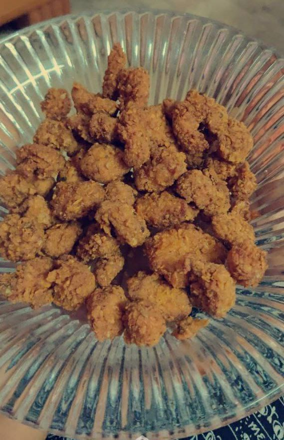

Chicken Popcorn

Ingredients
- Boneless Chicken pieces
- Salt 3/4 tsp
- Pepper 3/4 tsp
- Buttermilk 1 cup
- All purpose flour 1 cup
- Paprika
- Red Chilli powder
- Garlic powder
- Oregano
- Baking powder
Method of Preperation
- Wash and pat dry the chicken fillets/boneless pieces.Cut them into small bite size pieces.
- Add these pieces into a bowl. Add salt, pepper powder and pour the buttermilk over it.
- Mix it well. Set aside for an hour.
- Take a square glass bowl/baking dish and pour the flour/maida. Add all items indicated and mix it well.
- Now take out the marinated chicken pieces one at a time and drop them in the flour mixture. Once 5/6 are placed, dredge them well with the flour mixture and keep them side by side on a plate. Repeat in batches of 5/6.
- Once the oil is medium hot, drop the breaded chicken pieces one at a time and fry in batches, to not crowd the pan.
- Cook until golden brown
- Chicken Popcorn is ready to serve